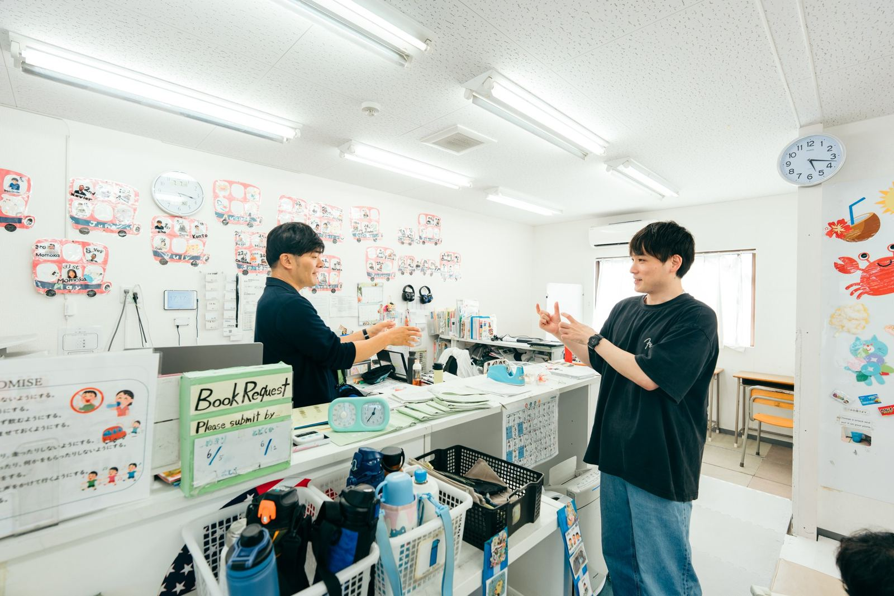

約40年
地域福祉に関わってきた年月
親子二代・NPO活動を出発点に
約10年
福祉施設の運営実績
放課後等デイ・就労継続支援B型を直営
3つ
運営指導・BPO・採用を1社で
窓口がひとつ。3つの情報がつながる
産学連携
大学との共同研究
発達障害と金銭課題の調査研究
REALITY CHECK
「まだ来ていない」は、安心材料ではありません
実地指導（運営指導）は概ね3年に1回、全事業所が対象です。こども家庭庁への移管、報酬改定、事業所の急増、オンライン活用。指導を取り巻く環境は、確認項目が増える方向に動いています。
01
最大5年の遡及返還義務
誤算定は過去分までまとめて返還対象になります。
02
+40％ 不正請求の加算金
返還額にさらに上乗せされます。
03
事業者名まで公表
信用・採用にも影響が及びます。
返還額のシミュレーション
児童指導員等加配加算 月37万円分の誤算定・定員10名モデル
| 発覚の時期 | 返還額の目安 |
|---|---|
| 1年で発覚 | 約450万円 |
| 3年で発覚 | 約1,350万円 |
| 5年で発覚 | 約2,240万円 |
| ＋加算金40% | 約3,140万円 |
返還請求 約7,400万円の公表事例も（政令市）
ROOT CAUSE
悪意がなくても、「不正請求」になり得ます。
指摘の原因は、当日ではなく日常業務にあります。計画の期限切れは日々の書類運用、常勤換算の誤りは毎月のシフト管理、加算要件の不備は毎月の請求業務。児発管に属人化した運用は、退職や異動で一気に崩れます。
だから、まず点検で現状を知り、日常業務そのものを外部化する。これが恒久対策です。
SELF CHECK
よくある指摘事項 TOP10。いくつ該当しますか
気になる項目を押してください。3つ以上なら、至急の是正をおすすめします。
0個 該当
現状維持でも大丈夫そうです
年1回の点検で、この状態を維持していきましょう。
SERVICE MAP
点検を入口に、過去の是正と、これからの運営改善
福祉施設の119番は、ご相談の窓口です。ここを起点に、過去と未来の両方をご支援します。
02 ／ THE PAST ＝ 治療
遡及点検・是正支援
「これまでの分が不安で、前に進めない」。その状態をまず解消します。不備の洗い出しと重要度判定、自主点検報告書の作成支援、過誤調整・自主返還の判断支援まで。
詳しく見る03 ／ THE FUTURE ＝ かかりつけ医
3つの月額サービス
運営指導コンサル、BPO（請求・電話・法定義務）、RPO（採用運用代行）。守り・実務・人材の3方向から、施設の経営を止める要因を解消します。
詳しく見る医療連携体制構築支援 医療機関・訪問看護ステーションとの連携体制を整え、医療連携体制加算の算定開始までをご支援します。詳しく見る
PARTNERS
119番では解けないお悩みも、解ける会社へ
人・お金・現場・経営者ご自身のこと。施設経営のお悩みごとに、解決できる協力企業とその想いを紹介する「解決パートナー」を準備しています。ご相談の窓口は119番ひとつです。

お悩みから、解ける会社へ
WHY US
わたしたちは、福祉の現場を自ら運営している事業者です
実地指導も請求も採用も、「受けてきた側」「やってきた側」の視点でご支援できます。
01
現場の運営者が、設計者
放課後等デイサービスと就労継続支援B型を直営。請求・電話・実地指導まで実体験しています。現場で使えるオペレーションを、そのまま外出しします。
02
親子二代・約40年の地域福祉
新規参入ではありません。地域福祉NPOの活動を出発点に、二代にわたり現場に関わり続けてきました。
03
大学との共同研究
現場の実感を、学術的な検証を伴う知見へ。研究者との共同研究に取り組んでいます。
CONTACT
まずは、現在地を知ることから
健康診断のご相談、過去の分の扱い、月額サービスの構成。どの段階のご相談でも構いません。率直なご状況をお聞かせください。
予約フォームが開きます。ご都合のよい日時をお選びください。